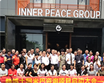

工作的字典中，最重要的一个词就是热情。
阿米巴经营所提倡的“热情”很简单，就是做人、做事所表现出来的积极、友好的情感和态度， 并用这种美好的情感和态度去感染他人，让他人感到温暖。

当我们接到老朋友的电话，当他用无比热情的语气亲切地询问你的近况，关心你的生活，邀请你做客，赏花看景的时候，你会有什么感觉？会不会觉得自己在他心中占有一席之地？会不会觉得自己是他重要的朋友？会不会有一种被人重视，被别人捧在手心呵护的感觉？ 我们需要热情，生活中需要，工作中也需要。热情是将我们的内心和他人内心联系起来的重要力量，它可以消除矛盾，化解分歧。当你带着热情工作时，周围的人都会感受到你的光和热，而工作的结果往往就是事半功倍。 你周围的人感受到你的热情了吗？